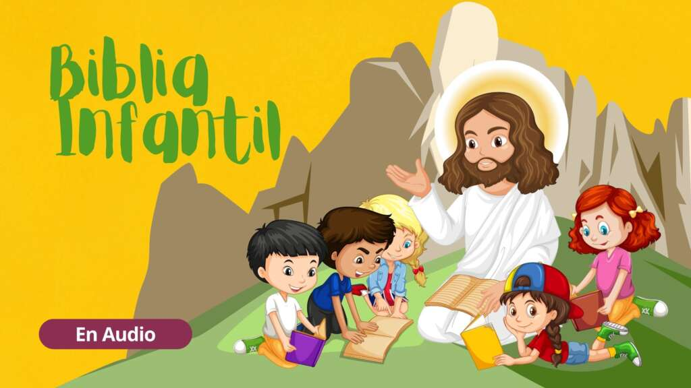
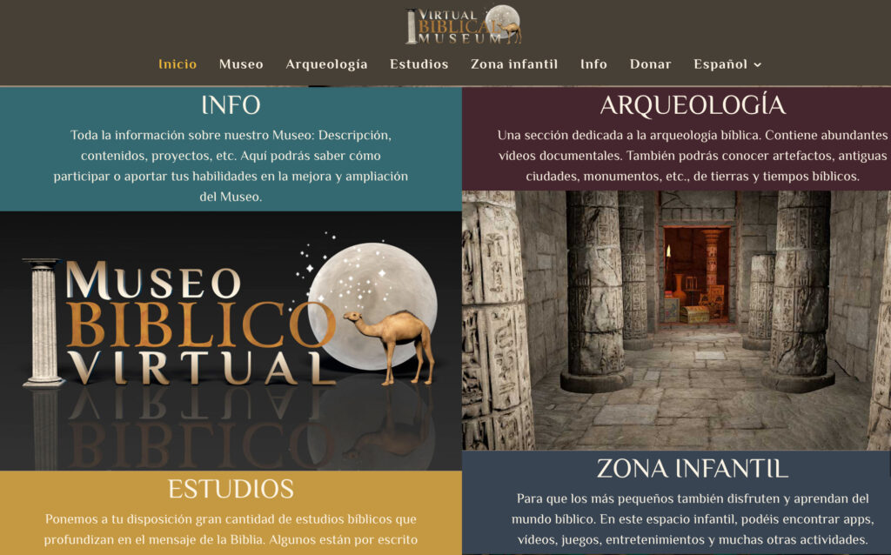

Recursos | Programas
Himnario Adventista Nueva Aplicación para Windows (actualizado 2023)
Esta es una nueva aplicación del himnario adventista desarrollada para sistemas operativos Windows que incluye nuevas carácteristicas muy importantes para su completo funcionamiento en la iglesia.
Ver Más
Software para Proyectar la Biblia
BibleShow es una solución de software para presentar versículos de las Sagradas Escrituras en cualquier dispositivo de visualización de video (monitor, proyector, televisor, IWB) conectado a una computadora personal que ejecute el sistema operativo Microsoft Windows.
Ver MástheWord, software gratis de Estudio Bíblico con comentarios, mapas, diccionarios y versiones bíblicas, en muchos idiomas
theWord fue creada para ser una herramienta valiosa y cotidiana para todo cristiano que desee leer y estudiar la Biblia, la Palabra de Dios. Creemos que theWord es uno de los mejores programas de software de estudio bíblico disponibles.
Ver Máse-Sword – Software de Estudio Bíblico + Módulos Adventistas
e-Sword es una forma rápida y efectiva de estudiar la Biblia. e-Sword es un software rico en funciones y fácil de usar, con más capacidades de las que esperaría en una aplicación gratuita de estudio de la Biblia.
Ver MásEl Santuario – Software para PC
El Santuario» es un programa para computadora que estudia a detalle cada componente del santuario. Comenzando por el atrio, el tabernáculo, el sacerdote, los servicios, los sacrificios y ofrendas y terminando en las festividades, es un Software que presenta una completa información basada en la Biblia, Comentario y Diccionario Bíblico Adventista y los escritos de Elena de White, ademas de la narración de las citas expuestas.
Ver MásLas Más Grandes Lecciones Bíblicas – Programa para PC
El CD Rom «Las Mas Grandes Lecciones Bíblicas» trae consigo el mensaje de los tres angeles. Es un software para ejecutar en computadora donde se estudian doce importantes lecciones.Esta es una aplicacion muy completa, trae consigo doce estudios narrados y escritos que proclaman el mensaje adventista.
Ver Más| Descargas